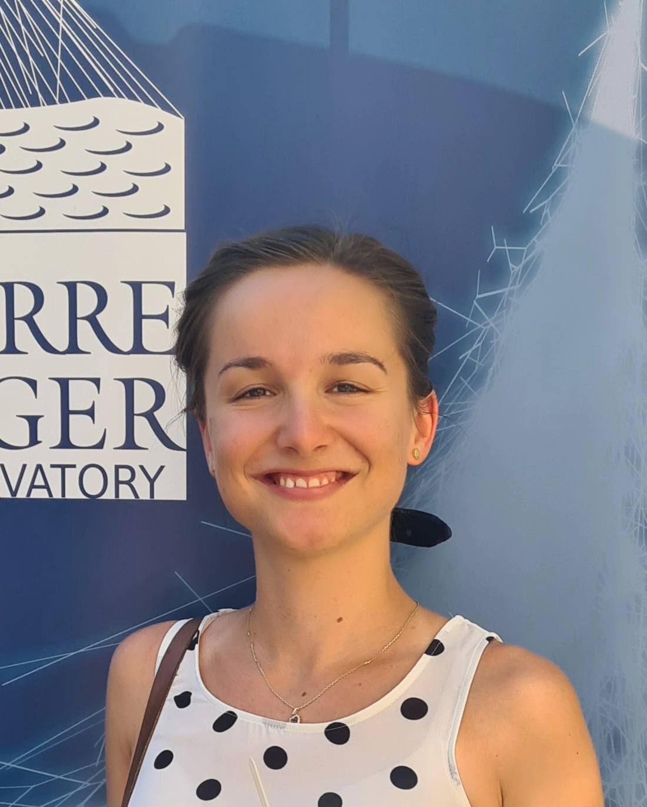
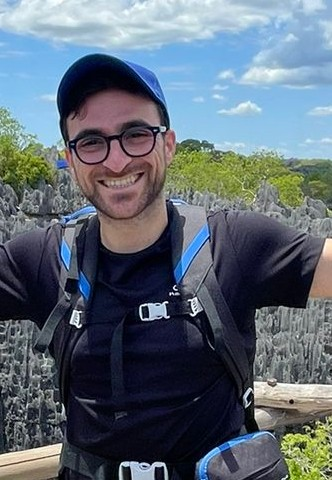
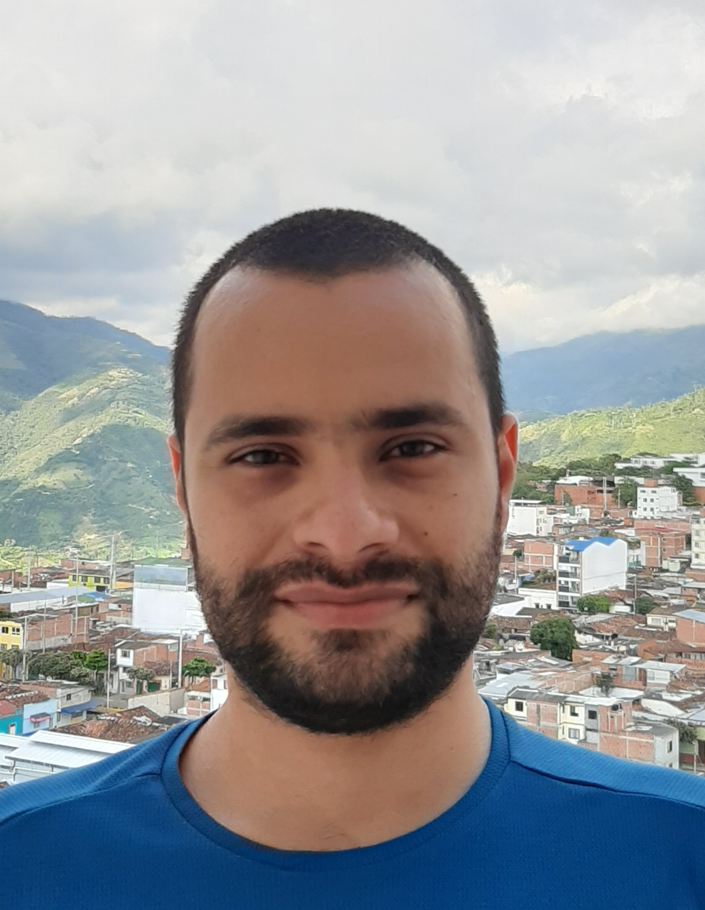

Job opportunities
Currently we have 2 openings for postdoctoral positions. See the announcement on IceCube position
here and the one on Auger here .
Our team is highly international and enthusiastic. We are working on complex and different subjects,
with the main common research on the cosmic rays from 0.01 EeV to more than 100 EeV.
If you would like to join us, either at Master, PhD or postdoctoral level, do not hesitate to drop me an email.
Current members


Former members


ioana.maris (at) ulb.ac.be
+32 2 629 32 26
Address: Boulevard du Triomphe,2, CP 230, B-1050 Bruxelles
Office: Building G, 0G-113, VUB Campus